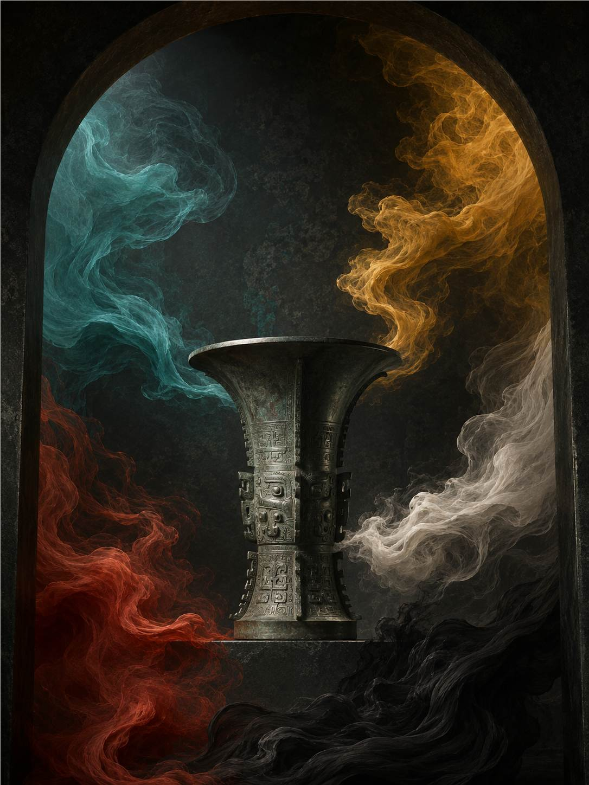

五色为正，万色由此而生。
第一展厅EXHIBITION 01
正色溯源
五色生万色，一色见天地。
青、赤、黄、白、黑，并非五种孤立的颜色。在古人的世界观中，它们连接方位、四时、五行与礼制，共同组成一套关于天地秩序的色彩体系。
THE ORDER OF FIVE COLORS
五色与天地
天地五色由此
分位成序
分位成序
颜色，在古人眼中也是天地运行的秩序。
天地居中，五色向四方、五行与四时展开；颜色因此成为理解秩序的方式。
五色不是单独存在，而是在彼此关系中形成意义。
五正色
THE FIVE ORTHODOX COLORS
01 / 05青
FROM FIVE TO THOUSANDS
五色生万色
正色为纲，间色与衍生色由此展开。
COLOR AND RITUAL ORDER
色有等第
颜色不仅属于审美，也曾参与制度与身份的表达。
服饰
不同历史时期，颜色与服饰制度之间有着复杂关联。它既关乎材料与染色技术，也在特定礼制环境中参与身份、场合与秩序的表达。
建筑
朱红、琉璃黄与黛瓦灰进入宫殿、门阙与屋脊，让空间的等级、方向与仪式感被颜色持续强化。
器物
漆、釉、矿物颜料与织物纤维改变颜色的明度、肌理与光泽。传统色因此不是抽象色值，而是由工艺和生活共同塑成的视觉经验。
